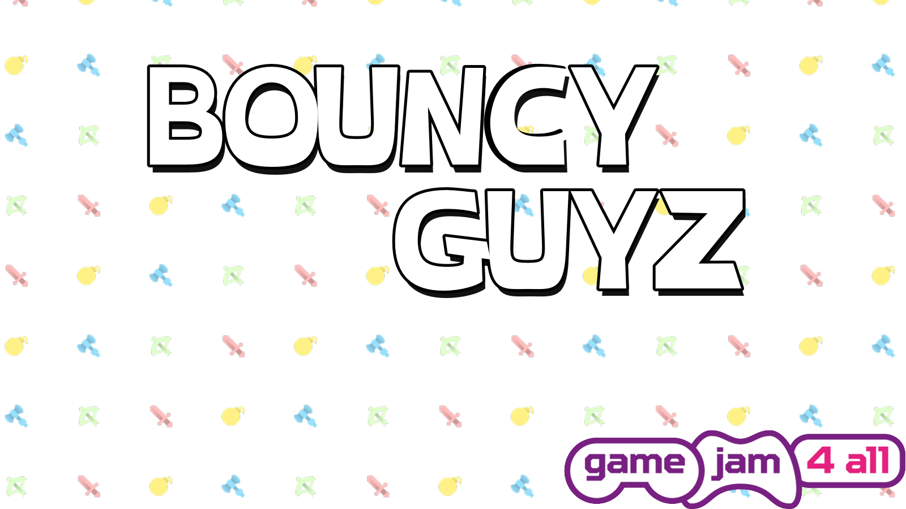
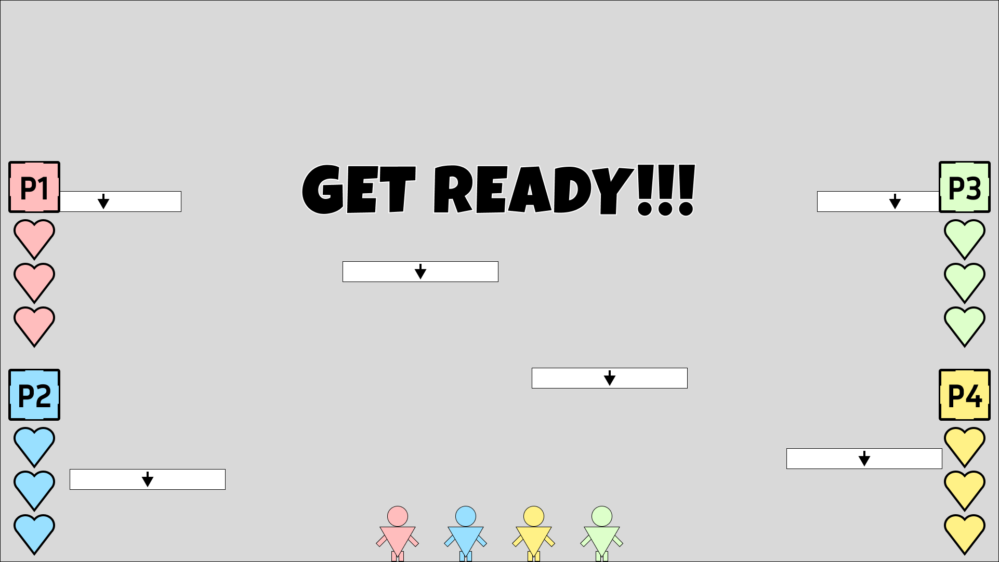
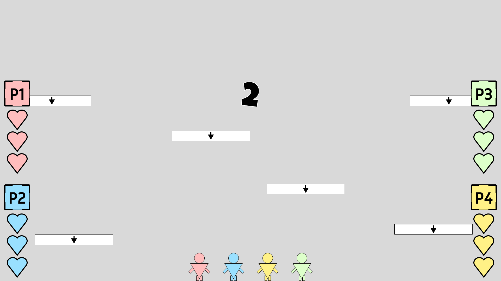
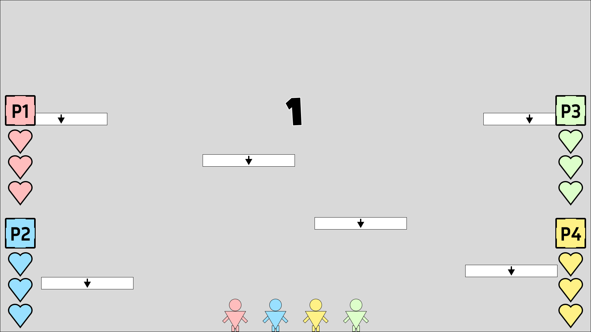
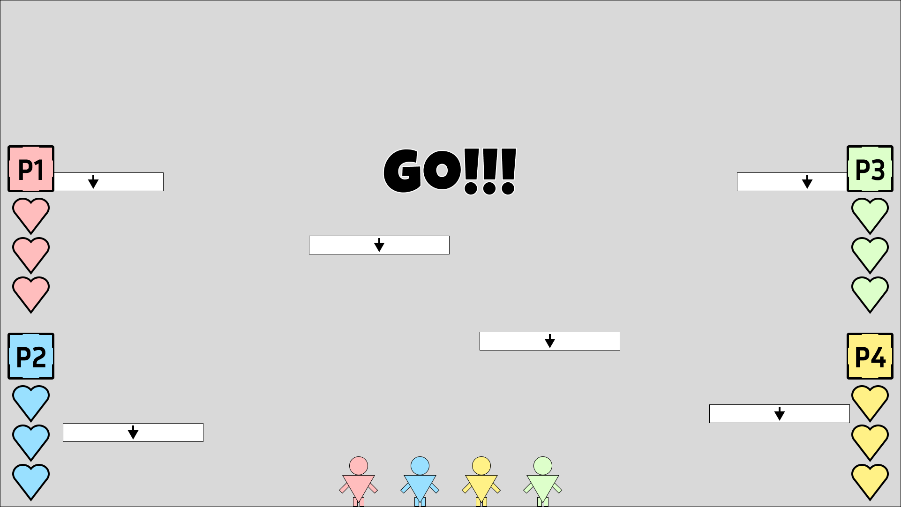

PROJECT - BOUNCY GUYZ
ROLE: UI/UX DESIGNER
PROJECT-LENGTH: 1 WEEK
TEAM-SIZE: 3
GENRE: PLATFORMER
Download Project

Core Tasks
-UI/UX Design
-Accessibility Design
-UE5 Blueprints
-Asset Implementation
OVERVIEW
Bouncy Guyz is a party platformer that was done as apart of and won the Tencent Games 4 All game jam. This jam was about accessibility within games, with our project focusing on input features. The way me and my team decided this was to build input accessibility into the project’s foundation by simplifying the control scheme to only two buttons (move left and move right) and allowing the players to rebind their controls before each game.
The main goal for this project was to create a game that was a “pick up and play” experience, mechanically simplistic but enjoyable through engaging feedback.
INITIAL CONCEPT
During the early portion of development my team threw around a few idea, however, my idea was chosen in the end. To meet the Jam's theme of community my idea was to create a 1-4 player endless platformer which focused on input accessibility, this would be done by having a simple control scheme and providing key rebinding features to allow players to set their inputs to whatever feels comfortable.
Throughout development the project change with the removal of some initial ideas such as hazards and pushing a bigger focus on the community aspect. However, the core ideas of input accessibility were constantly developed throughout with the inclusion of additional accessibility areas such as cognitive and a settings menu which allowed us to include audio/video options.
To help guide our development our team used resources such as the “accessible games initiative” website as they strive for accessibility features in games. They have a section on their website which breaks down these features into “tags” allowing us to better understand them and implement them into the project.
Typography and UI style
The font that was chosen for the game is called “OpenDyslexic” which is designed to combat some of the common symptoms of dyslexia. Even though this project was primarily focusing on input accessibility, the team believe that if we had the ability to add additional accessibility options into the project then we should. This font also fitted the art style of the game being very rounded and slightly cartoonish which allowed the inclusion of it, without ruining the style of the game.
The overall UI style was designed to be cartoonish to fit the assets we had available. Going with rounded shapes and pastel colours also helped fit the jam’s theme of community as we wanted to create a family friendly party game that was accessible to all ages.
Player Vitals
The Player Vitals contain how many hearts the player has as well as an image render of the character they chose. Each Vital Bar is displayed on the sides of the screen so that they don’t intrude on the player’s gameplay or block visibility of hazards. As well as this each Vital Bar is set either red, blue, green or yellow depending on how many players there are. The use of colour with an image of their character helps new player’s identify which widget relates to them.
Feedback was also taken into account when developing the Vitals. Obviously sound helps convey actions to the player, however, the addition of small animations provides extra affordance to the player on how that action effected them. For example, when the player gets hit, they take one damage and one of their hearts does a little wobble as the heart icon changes to an empty version. If the player looses all of their hearts, then their character image will be replaced with a skull.
Initially planned to be anchored to the top of the screen with the amount of coins the player has collected displayed, however, a good point made by one of my team members was that the inclusion of a coin counter would incentivise players to fight each other to see who collected the most coins. Competitiveness is common in these types of games, but with this project’s focus on community it was decided to hide how many coins the player has collected until the end game screen appeared.
PLAYER SELECT
The Player Select screen appears right after the player select how many players playing. Depending on how many players will depend how many select widgets appear. This screen allows players to set their inputs before playing the game and select what character they would like to play as.
When the Player Select screen appears it will require the player press what they want their left input to be, pressing it once will make it appear, but they will need to press it again to confirm in case they accidentally press the wrong input.
After both inputs are set then the player will be given a selection of characters to choose from. This assists cognitively with the player’s association with the character, as by allowing the player to pick a character they will have an easier time looking for which Vital bar relates to them.
START UP
The start screen adds a buffer between the main menu and the gameplay; this gives players breathing room to get ready before playing instead of just jumping them right into a countdown which could make them feel either rushed or unprepared.
Additionally, the inclusion of an input reminder widget was added which displays all of the player’s inputs in a row. This reminds the players what their movement inputs are before starting the game.
PAUSE MENU
The pause menu gives the players the option to either return to the main menu or quit the game entirely. However, similar to the Start screen an input reminder has been added to each of the player Vital bars.
This was done for similar reason to the Start screen because if the players pause the game we the developers don’t know how long that game has been paused for, maybe someone has gone to grab a drink or use the restroom. So, by the time the game is resumed it could have been 10 minutes and by that time some players might need a little reminder of what their inputs are, especially if when the game is resumed their immediately pushed back into active gameplay.
GAME COUNTDOWN
In addition to the Start screen, the inclusion of a countdown was wanted to give affordance to the players that the game is starting. Even to someone who doesn’t play games a countdown signals to people that they should get ready. The Start screen works as a passive buffer between gameplay whereas the countdown operates as an active buffer, these in between points allow the game to ease the player into gameplay.

Countdown Storyboard 1

Countdown Storyboard 2
Countdown Storyboard 3

Countdown Storyboard 4

Countdown Storyboard 5

Countdown Storyboard 6

Countdown Storyboard 7

Countdown Storyboard 8

Countdown Storyboard 9
MAIN MENU
The main menu allows the player to start the game, enter the options menu which allows the changing of any video/audio options, as well as the ability to quit the game.
The choice to use a horizontal alignment for the buttons was to make it easier for the player’s input. Since they can only use left and right to navigate, having a horizontal alignment provides better feedback than a vertical alignment. This is because using a vertical alignment would result in left and right inputs being used to up and down along the buttons, which doesn’t feel as intuitive compared to pressing the right input to move right on the buttons.